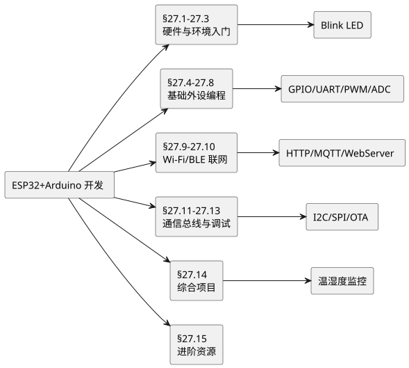
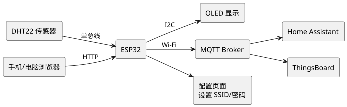

第 27 章 ESP32+Arduino 开发
学习目标
- 理解 ESP32 硬件架构与外设资源，能够对比其与 STC89/STM32 的差异并合理选型
- 掌握 Arduino IDE 环境搭建与基础外设编程（GPIO、串口、定时器、PWM、ADC、I2C/SPI）
- 掌握 ESP32 Wi-Fi 与 BLE 联网开发，能够实现 HTTP、Web Server、MQTT 等物联网通信
- 完成 Wi-Fi 温湿度监控综合项目，具备从传感器采集到云端部署的端到端开发能力
- 具备继续自学 OTA 升级、ESP-IDF 原生框架、ESP32-S3/C3 RISC-V 等进阶内容的能力
ESP32 是乐鑫科技（Espressif）于 2016 年推出的高性价比物联网 SoC，单芯片集成双核 Xtensa LX6 处理器、Wi-Fi 与 BLE，价格仅 10 元左右。配合 Arduino 框架的简洁 API，初学者只需几行代码即可点亮 LED、连接 Wi-Fi、上传数据到云端。本章从硬件介绍到综合项目，系统讲解 ESP32 + Arduino 开发的完整流程，是物联网入门的事实标准。

查看 PlantUML 源码
@startuml
skinparam defaultFontName "Microsoft YaHei"
skinparam backgroundColor #ffffff
left to right direction
rectangle "ESP32+Arduino 开发" as A
rectangle "§27.1-27.3\n硬件与环境入门" as B
rectangle "§27.4-27.8\n基础外设编程" as C
rectangle "§27.9-27.10\nWi-Fi/BLE 联网" as D
rectangle "§27.11-27.13\n通信总线与调试" as E
rectangle "§27.14\n综合项目" as F
rectangle "§27.15\n进阶资源" as G
rectangle "Blink LED" as B1
rectangle "GPIO/UART/PWM/ADC" as C1
rectangle "HTTP/MQTT/WebServer" as D1
rectangle "I2C/SPI/OTA" as E1
rectangle "温湿度监控" as F1
A --> B
A --> C
A --> D
A --> E
A --> F
A --> G
B --> B1
C --> C1
D --> D1
E --> E1
F --> F1
@enduml§27.1 ESP32 硬件介绍
ESP32 是乐鑫继 ESP8266 之后推出的第二代物联网芯片，定位"高集成度、低功耗、低成本"。它将双核 CPU、Wi-Fi、BLE、丰富外设集成在同一颗 7×7mm 芯片内，外接一颗 Flash 即可构成完整系统。理解 ESP32 的硬件特性是后续编程的基础。
§27.1.1 核心规格
ESP32 的核心规格如下表所示，可以看出其资源远超传统 8 位单片机：
| 类别 | 规格 | 说明 |
|---|---|---|
| CPU | Xtensa LX6 双核 | Core0 用于 Wi-Fi/蓝牙协议栈，Core1 可用于应用 |
| 主频 | 160 MHz / 240 MHz | 可动态调频以降低功耗 |
| SRAM | 520 KB | 片内静态 RAM |
| Flash | 4 MB（典型） | 外挂 SPI Flash，存程序与数据 |
| Wi-Fi | 802.11 b/g/n | 2.4 GHz，AP/STA/混合模式 |
| 蓝牙 | BLE 4.2 + 经典蓝牙 | 双模蓝牙控制器 |
| GPIO | 34 个可编程引脚 | 支持中断、上拉/下拉 |
| ADC | 2 × 12 位 SAR | ADC1（8 通道）、ADC2（10 通道） |
| DAC | 2 × 8 位 | GPIO25/26 |
| PWM（LEDC） | 16 通道 | 0-19 位分辨率可调 |
| 通信接口 | 3 × UART、2 × I2C、4 × SPI、2 × I2S、CAN、以太网 MAC | 资源丰富 |
| 定时器 | 4 × 64 位通用定时器 | 支持中断 |
| 低功耗模式 | Active/Modem Sleep/Light Sleep/Deep Sleep/Hibernation | Deep Sleep 仅 10 µA |
| 工作电压 | 2.2-3.6V | 典型 3.3V |
§27.1.2 常见模组与开发板
ESP32 芯片本身是裸 die，实际使用时多采用模组（已封装 Flash、晶振、PCB 天线）或开发板（已集成 USB 转串口、电源、按键）。
| 型号 | 特点 | 典型用途 |
|---|---|---|
| ESP32-WROOM-32 | 4 MB Flash，PCB 天线，最常见 | 通用物联网 |
| ESP32-WROVER | 增加 4 MB PSRAM | 需要大内存（图像、LVGL） |
| ESP32-S2 | 单核 240 MHz，USB OTG，无 BLE | USB 设备 |
| ESP32-S3 | 双核 240 MHz，USB OTG，AI 指令 | USB + AI 推理 |
| ESP32-C3 | RISC-V 单核 160 MHz，BLE 5 | 低功耗 IoT |
| NodeMCU-32S | WROOM-32 + CH340 + Type-C | 入门开发板 |
| ESP32 DevKitC | 乐鑫官方开发板 | 官方参考设计 |
§27.1.3 引脚说明与启动注意事项
NodeMCU-32S 开发板的引脚标注与芯片 GPIO 编号不完全一致，编程时需对照。下表列出关键引脚及其特性：
| 板载标注 | GPIO | 功能/限制 |
|---|---|---|
| D0 | GPIO0 | 启动模式选择，上电必须为高；下拉进入下载模式 |
| D2 | GPIO2 | 板载蓝灯，启动时必须为低或悬空 |
| D12 | GPIO12 | 启动时若为高将导致 Flash 电压错配 |
| D15 | GPIO15 | 启动时必须为低 |
| RX/TX | GPIO3/1 | UART0，下载与串口监视器 |
| D21/D22 | GPIO21/22 | 默认 I2C（SDA/SCL） |
| D18/D19/D23/D5 | GPIO18/19/23/5 | 默认 VSPI（CLK/MISO/MOSI/CS） |
| VP/VN | GPIO36/39 | 仅输入，ADC1 通道 |
§27.1.4 与 STC89/STM32 对比
ESP32 与本课程前两篇的 STC89C52RC、STM32F407 定位差异明显：
| 维度 | STC89C52RC | STM32F407 | ESP32 |
|---|---|---|---|
| 内核 | 8051 8 位 CISC | Cortex-M4 32 位 | Xtensa LX6 32 位双核 |
| 主频 | 11.0592 MHz | 168 MHz | 240 MHz |
| RAM | 256 B | 192 KB | 520 KB |
| Flash | 8 KB | 1 MB | 4 MB（外挂） |
| Wi-Fi/BT | 无 | 无 | 内置 |
| 开发框架 | Keil C51 | HAL/LL + CubeIDE | Arduino / ESP-IDF |
| 实时性 | 强（无 OS） | 强（可选 RTOS） | 中（FreeRTOS 内置） |
| 价格 | ~3 元 | ~25 元 | ~10 元 |
| 典型场景 | 教学入门 | 工业控制 | 物联网终端 |
ESP32 的最大优势是"单芯片解决联网 + 控制"，无需外接 Wi-Fi 模块（如 ESP8266 之于 STM32），大幅降低物联网终端的复杂度与成本。
§27.2 开发环境搭建
ESP32 的开发方式有多种：Arduino IDE（最简单）、PlatformIO（VS Code 插件）、ESP-IDF（乐鑫官方原生框架）。本章使用 Arduino IDE，因其上手最快，适合初学者。
§27.2.1 安装 Arduino IDE
从 Arduino 官网 https://www.arduino.cc/en/software 下载 Arduino IDE 2.x（Windows 版安装包），按提示安装。安装完成后启动，默认只支持 Arduino AVR 系列。
§27.2.2 添加 ESP32 开发板支持
Arduino IDE 通过"开发板管理器"扩展对第三方芯片的支持。操作步骤如下：
- 打开
文件 → 首选项。 - 在"附加开发板管理器网址"中填入 ESP32 的索引地址：
https://raw.githubusercontent.com/espressif/arduino-esp32/gh-pages/package_esp32_index.json - 点击"确定"保存。
- 打开
工具 → 开发板 → 开发板管理器。 - 搜索
esp32，找到esp32 by Espressif Systems，点击"安装"。建议安装最新稳定版（本书以 2.0.x 为例）。
https://ghproxy.com/https://raw.githubusercontent.com/espressif/arduino-esp32/gh-pages/package_esp32_index.json§27.2.3 选择开发板与端口
安装完成后，进行以下配置：
- 菜单
工具 → 开发板 → esp32，选择 ESP32 Dev Module（通用选择，兼容 NodeMCU-32S）。 Upload Speed：选921600（下载速度快）。CPU Frequency：默认240MHz (WiFi/BT)。Flash Size：默认4MB (32Mb)。- 用 USB 数据线连接 ESP32 开发板到电脑，Windows 通常自动安装 CH340/CP210x 驱动。
- 菜单
工具 → 端口，选择对应的 COM 口（如COM3）。
如果电脑没有识别出 COM 口，需要手动安装 USB 转串口芯片驱动：NodeMCU-32S 用 CH340（搜索"CH340 驱动"），DevKitC 用 CP2102（搜索"CP2102 驱动"）。
§27.2.4 PlatformIO 简介
PlatformIO 是 VS Code 上的嵌入式开发插件，相比 Arduino IDE 有以下优势：项目管理更规范、库依赖自动管理、Git 集成、代码补全更强。安装方法：在 VS Code 扩展商店搜索"PlatformIO IDE"安装即可。新建项目时选择 Espressif ESP32 Dev Module 平台，代码语法与 Arduino 完全一致，只是工程结构不同。本课程推荐初学者先用 Arduino IDE 入门，再过渡到 PlatformIO。
查看 PlantUML 源码
@startuml
skinparam defaultFontName "Microsoft YaHei"
skinparam backgroundColor #ffffff
left to right direction
rectangle "安装 Arduino IDE" as A
rectangle "首选项添加 ESP32 索引 URL" as B
rectangle "开发板管理器安装 esp32 包" as C
rectangle "选择 ESP32 Dev Module" as D
rectangle "安装 USB 转串口驱动" as E
rectangle "选择 COM 端口" as F
rectangle "开始编程" as G
A --> B
B --> C
C --> D
D --> E
E --> F
F --> G
@enduml§27.3 第一个程序：Blink LED
"Blink LED"是嵌入式开发的"Hello World"。本节通过点亮 NodeMCU-32S 上的板载蓝灯，介绍 Arduino 程序的基本结构。
§27.3.1 程序结构
Arduino 程序由两个必备函数组成：
setup()：上电或复位后只执行一次，用于初始化（配置引脚模式、串口、Wi-Fi 等）。loop()：在setup()之后循环执行，是程序主逻辑。
这种结构相比传统 main() + while(1) 简化了模板代码，让初学者专注于业务逻辑。
§27.3.2 代码实现
NodeMCU-32S 板载蓝灯连接 GPIO2，低电平点亮。打开 Arduino IDE，新建 sketch，输入以下代码：
// 第一个 ESP32 程序：板载 LED 闪烁
// NodeMCU-32S 板载蓝灯接 GPIO2，低电平点亮
#define LED_PIN 2 // 板载 LED 引脚
void setup() {
// 初始化 GPIO2 为输出模式
pinMode(LED_PIN, OUTPUT);
// 启动串口，波特率 115200
Serial.begin(115200);
Serial.println("\n=== ESP32 Blink LED ===");
}
void loop() {
digitalWrite(LED_PIN, LOW); // 点亮 LED（低电平）
Serial.println("LED ON");
delay(1000); // 延时 1 秒
digitalWrite(LED_PIN, HIGH); // 熄灭 LED（高电平）
Serial.println("LED OFF");
delay(1000); // 延时 1 秒
}
§27.3.3 上传程序与串口监视器
上传步骤：
- 点击工具栏的
→（上传）按钮，Arduino IDE 自动编译并下载。 - 如果下载卡住"Connecting..."，按住 ESP32 板上的 BOOT 按键，直到出现"Connecting..."变进度条后松开。
- 下载完成后，IDE 底部显示
Hash of data verified. Leaving... Hard resetting via RTS pin...。 - 打开
工具 → 串口监视器，右下角波特率选115200。 - 按一下 ESP32 板上的 EN（RST）按键复位，可看到串口输出 "LED ON"/"LED OFF"，板载蓝灯每秒闪烁一次。
§27.4 GPIO 数字输入输出
GPIO（General Purpose Input/Output）是最基础的外设。本节讲解 ESP32 GPIO 的输出（控制 LED）和输入（读取按键）。
§27.4.1 数字输出
除输入专用引脚（GPIO34-39）外，ESP32 的 GPIO 都可作数字输出。输出高电平为 3.3V，低电平为 0V，驱动能力约 20-40 mA（不可直接驱动大功率负载，需加三极管或继电器）。
// 流水灯：6 个 LED 依次点亮
// 接线：LED 阳极接 GPIO16/17/18/19/21/22，阴极经 220Ω 电阻接地
const int ledPins[] = {16, 17, 18, 19, 21, 22};
const int numLeds = 6;
void setup() {
for (int i = 0; i < numLeds; i++) {
pinMode(ledPins[i], OUTPUT);
digitalWrite(ledPins[i], LOW); // 初始全部熄灭
}
}
void loop() {
// 正向流水
for (int i = 0; i < numLeds; i++) {
digitalWrite(ledPins[i], HIGH);
delay(100);
digitalWrite(ledPins[i], LOW);
}
// 反向流水
for (int i = numLeds - 1; i >= 0; i--) {
digitalWrite(ledPins[i], HIGH);
delay(100);
digitalWrite(ledPins[i], LOW);
}
}
§27.4.2 数字输入与上拉电阻
按键读取是数字输入的典型应用。ESP32 GPIO 内置可编程上拉/下拉电阻（约 45 kΩ），使用 INPUT_PULLUP 模式可省去外部上拉电阻。按键一端接 GPIO，另一端接地，按下时引脚被拉低。
// 按键控制 LED：按下亮，松开灭
// 接线：按键接 GPIO4 与 GND；LED 接 GPIO2
const int btnPin = 4;
const int ledPin = 2;
int lastState = HIGH;
int ledState = LOW;
void setup() {
pinMode(btnPin, INPUT_PULLUP); // 启用内部上拉
pinMode(ledPin, OUTPUT);
Serial.begin(115200);
}
void loop() {
int cur = digitalRead(btnPin);
if (cur == LOW && lastState == HIGH) { // 检测下降沿（按下瞬间）
ledState = !ledState; // 翻转 LED 状态
digitalWrite(ledPin, ledState);
Serial.printf("按键按下，LED %s\n", ledState ? "ON" : "OFF");
delay(20); // 简单消抖
}
lastState = cur;
}
§27.4.3 软件消抖
机械按键在按下/松开瞬间会有 5-20 ms 的抖动，导致一次按下被识别为多次。常用消抖方法有：
- 延时消抖：检测到电平变化后
delay(20)再读取，简单但阻塞。 - 定时器消抖：检测到变化后启动 20 ms 定时器，定时器到期再读取最终电平。非阻塞。
- 状态机消抖：使用状态机记录按键状态，结合时间戳判定。
§27.5 串口通信
串口是 ESP32 与电脑、其他设备通信的主要途径。ESP32 有 3 个硬件 UART：UART0 用于下载与串口监视器（GPIO1/3），UART1/UART2 可自由映射到任意 GPIO。
§27.5.1 串口输出
// 串口输出示例：每秒打印计数器
void setup() {
Serial.begin(115200); // 必须与串口监视器波特率一致
Serial.println("ESP32 Serial Demo");
}
int counter = 0;
void loop() {
Serial.print("counter = "); // 不换行
Serial.println(counter); // 换行
Serial.printf("hex=%#x, bin=%B\n", counter, counter); // 格式化
counter++;
delay(1000);
}
§27.5.2 串口接收与命令处理
// 串口命令控制：输入 "on" 点灯，"off" 灭灯
const int ledPin = 2;
String input = "";
void setup() {
Serial.begin(115200);
pinMode(ledPin, OUTPUT);
Serial.println("输入 on/off 控制 LED：");
}
void loop() {
while (Serial.available()) { // 有数据可读
char c = Serial.read(); // 读一个字节
if (c == '\n') { // 遇到换行符表示命令结束
input.trim(); // 去除空白
if (input == "on") {
digitalWrite(ledPin, LOW); // 板载灯低电平点亮
Serial.println("LED ON");
} else if (input == "off") {
digitalWrite(ledPin, HIGH);
Serial.println("LED OFF");
} else {
Serial.printf("未知命令：%s\n", input.c_str());
}
input = "";
} else {
input += c;
}
}
}
§27.5.3 第二串口与其他设备通信
// 使用 UART2 与另一设备通信（如 GPS 模块）
// 接线：GPS TX → GPIO16(RX2)，GPS RX → GPIO17(TX2)
#define RXD2 16
#define TXD2 17
void setup() {
Serial.begin(115200); // 与电脑通信
Serial2.begin(9600, SERIAL_8N1, RXD2, TXD2); // 与 GPS 通信
Serial.println("UART2 已启动");
}
void loop() {
if (Serial2.available()) {
String line = Serial2.readStringUntil('\n');
Serial.print("GPS: ");
Serial.println(line);
}
}
Serial2.begin() 中指定。
§27.6 定时器与中断
定时器与中断是实现精确时序与非阻塞响应的关键。ESP32 提供硬件定时器、软件定时器（Ticker）和外部中断三种机制。
§27.6.1 硬件定时器
ESP64 内置 4 个 64 位通用定时器，分频后可产生微秒级精确中断。Arduino ESP32 提供 HardwareTimer 类（推荐）或 hw_timer_t API。
// 硬件定时器每 1 秒翻转 LED
// 使用 timerBegin / timerAttachInterrupt / timerAlarm
const int ledPin = 2;
volatile bool toggle = false;
hw_timer_t *timer = NULL;
portMUX_TYPE timerMux = portMUX_INITIALIZER_UNLOCKED;
void IRAM_ATTR onTimer() { // 中断服务程序必须加 IRAM_ATTR
portENTER_CRITICAL_ISR(&timerMux);
toggle = !toggle;
portEXIT_CRITICAL_ISR(&timerMux);
}
void setup() {
Serial.begin(115200);
pinMode(ledPin, OUTPUT);
timer = timerBegin(0, 80, true); // 定时器0，预分频80（1MHz），向上计数
timerAttachInterrupt(timer, &onTimer, true);
timerAlarmWrite(timer, 1000000, true); // 1,000,000 µs = 1 秒，自动重装
timerAlarmEnable(timer);
Serial.println("定时器已启动");
}
void loop() {
bool local;
portENTER_CRITICAL(&timerMux);
local = toggle;
portEXIT_CRITICAL(&timerMux);
digitalWrite(ledPin, local ? LOW : HIGH);
}
§27.6.2 软件定时器 Ticker
对于精度要求不高的周期任务，Ticker 库更简单：
#include <Ticker.h>
Ticker ticker;
const int ledPin = 2;
void toggleLED() {
static bool st = false;
digitalWrite(ledPin, st ? LOW : HIGH);
st = !st;
}
void setup() {
pinMode(ledPin, OUTPUT);
ticker.attach(0.5, toggleLED); // 每 0.5 秒调用一次
}
void loop() {
// 主循环可做其他事情
delay(10);
}
§27.6.3 外部中断
ESP32 任意 GPIO（除输入专用引脚也可）都支持外部中断：
// 按键外部中断：按下立即翻转 LED
const int btnPin = 4;
const int ledPin = 2;
volatile bool flag = false;
void IRAM_ATTR isrBtn() { // 中断函数必须简短，加 IRAM_ATTR
flag = true;
}
void setup() {
pinMode(btnPin, INPUT_PULLUP);
pinMode(ledPin, OUTPUT);
attachInterrupt(digitalPinToInterrupt(btnPin), isrBtn, FALLING);
Serial.begin(115200);
}
bool ledSt = false;
void loop() {
if (flag) {
delay(20); // 软件消抖
if (digitalRead(btnPin) == LOW) {
ledSt = !ledSt;
digitalWrite(ledPin, ledSt ? LOW : HIGH);
Serial.println("按键中断触发");
}
flag = false;
}
}
- 函数必须加
IRAM_ATTR放入内部 RAM，否则可能因 Flash 缓存未命中导致崩溃。 - 不能使用
delay()、Serial.print()等阻塞或依赖中断的函数。 - 共享变量必须用
portENTER_CRITICAL保护，或声明为volatile。 - 执行时间尽量短（<几十微秒），复杂处理放到
loop()中。
§27.7 PWM 与 LEDC
ESP32 没有传统 AVR 那种简单 PWM，而是使用LEDC（LED PWM Controller）硬件。LEDC 提供 16 通道、0-19 位可调分辨率、自动位深过渡，能输出稳定的 PWM 信号，可用于呼吸灯、舵机控制、电机调速等。
§27.7.1 LEDC 基本用法
LEDC 的核心三步：
ledcSetup(channel, freq, resolution)：配置通道的频率与分辨率。ledcAttachPin(pin, channel)：将 GPIO 绑定到通道。ledcWrite(channel, duty)：设置占空比。
// 呼吸灯：GPIO2 上的 LED 渐亮渐灭
const int ledPin = 2;
const int channel = 0; // 使用 LEDC 通道 0
const int freq = 5000; // 5 kHz
const int resolution = 8; // 8 位分辨率，占空比 0-255
void setup() {
ledcSetup(channel, freq, resolution);
ledcAttachPin(ledPin, channel);
}
void loop() {
// 渐亮
for (int duty = 0; duty <= 255; duty++) {
ledcWrite(channel, duty);
delay(8);
}
// 渐灭
for (int duty = 255; duty >= 0; duty--) {
ledcWrite(channel, duty);
delay(8);
}
}
§27.7.2 舵机控制
标准舵机要求 50 Hz PWM，脉宽 0.5-2.5 ms 对应 0-180°。可使用 Servo 库（已适配 ESP32）：
#include <ESP32Servo.h>
Servo myservo;
const int servoPin = 13;
void setup() {
ESP32PWM::allocateTimer(0);
myservo.setPeriodHertz(50); // 50 Hz
myservo.attach(servoPin, 500, 2400); // 脉宽 500-2400 µs
}
void loop() {
for (int angle = 0; angle <= 180; angle += 10) {
myservo.write(angle);
delay(200);
}
for (int angle = 180; angle >= 0; angle -= 10) {
myservo.write(angle);
delay(200);
}
}
freq × 2^resolution ≤ 80 MHz，例如 8 位分辨率下最高频率约 312.5 kHz。
§27.8 ADC 模数转换
ESP32 内置 2 个 12 位 SAR ADC，共 18 个通道。ADC1（GPIO32-39）8 通道可随时使用；ADC2（GPIO0/2/4/12-15/25-27）10 通道在 Wi-Fi 启用后不可用，这是新手常踩的坑。
§27.8.1 基本读取
// 读取电位器并打印
const int potPin = 34; // ADC1 通道，输入专用引脚
void setup() {
Serial.begin(115200);
analogReadResolution(12); // 12 位分辨率（默认）
analogSetAttenuation(ADC_11db); // 量程扩展到约 0-3.3V
}
void loop() {
int raw = analogRead(potPin); // 0-4095
float voltage = raw * 3.3 / 4095.0;
Serial.printf("raw=%4d V=%.2f\n", raw, voltage);
delay(500);
}
§27.8.2 衰减设置
ESP32 ADC 默认量程为 0-1.1 V，需要通过衰减（attenuation）扩展。可选值如下：
| 衰减 | 有效量程 | 推荐 |
|---|---|---|
| ADC_0db（0 dB） | 0-1.1 V | 测量小信号 |
| ADC_2_5db（2.5 dB） | 0-1.5 V | — |
| ADC_6db（6 dB） | 0-2.2 V | — |
| ADC_11db（11 dB） | 0-3.3 V（典型 0-3.6 V） | 常规用途，最常用 |
§27.8.3 应用实例：LM35 测温
// LM35 温度传感器：每 10 mV 对应 1°C
const int lm35Pin = 35; // ADC1
void setup() {
Serial.begin(115200);
analogReadResolution(12);
analogSetAttenuation(ADC_11db);
}
void loop() {
int raw = analogRead(lm35Pin);
float voltage = raw * 3.3 / 4095.0;
float temp = voltage * 100.0; // LM35: 10 mV/°C
Serial.printf("温度: %.1f °C\n", temp);
delay(1000);
}
esp_adc_cal 库进行校准（芯片内置 eFuse 校准数据）。ADC2 在 Wi-Fi 启用后不可用，这是新手最常踩的坑——若发现读取始终为 0 或 4095，先检查是否启用了 Wi-Fi 且使用的是 ADC2 引脚。
§27.9 Wi-Fi 联网
Wi-Fi 是 ESP32 的核心卖点。Arduino ESP32 自带 WiFi.h 库，几行代码即可连接路由器、获取 IP、发起 HTTP 请求、搭建 Web 服务器。
§27.9.1 连接 Wi-Fi
#include <WiFi.h>
const char* ssid = "Your_SSID";
const char* password = "Your_Password";
void setup() {
Serial.begin(115200);
WiFi.mode(WIFI_STA); // STA 模式：连接路由器
WiFi.begin(ssid, password);
Serial.print("连接 Wi-Fi");
while (WiFi.status() != WL_CONNECTED) {
delay(500);
Serial.print(".");
}
Serial.println();
Serial.print("IP 地址: ");
Serial.println(WiFi.localIP());
Serial.print("信号强度(RSSI): ");
Serial.print(WiFi.RSSI());
Serial.println(" dBm");
}
void loop() {
if (WiFi.status() != WL_CONNECTED) { // 断线重连
Serial.println("Wi-Fi 断开，尝试重连...");
WiFi.reconnect();
delay(5000);
}
delay(10000);
}
§27.9.2 HTTP Client
使用 HTTPClient.h 发起 GET/POST 请求，访问 RESTful API：
#include <WiFi.h>
#include <HTTPClient.h>
const char* ssid = "Your_SSID";
const char* password = "Your_Password";
void setup() {
Serial.begin(115200);
WiFi.begin(ssid, password);
while (WiFi.status() != WL_CONNECTED) delay(500);
HTTPClient http;
// GET 请求示例：获取天气
http.begin("http://www.weather.com.cn/data/sk/101280101.html");
int code = http.GET();
if (code > 0) {
String payload = http.getString();
Serial.printf("HTTP %d\n", code);
Serial.println(payload);
} else {
Serial.printf("请求失败: %s\n", http.errorToString(code).c_str());
}
http.end();
}
void loop() {}
§27.9.3 Web Server 控制 LED
使用 WebServer.h 在 ESP32 上搭建简易 Web 服务器，通过浏览器控制 LED：
#include <WiFi.h>
#include <WebServer.h>
const char* ssid = "Your_SSID";
const char* password = "Your_Password";
WebServer server(80);
const int ledPin = 2;
void handleRoot() {
String html = "<!DOCTYPE html><html><head><meta charset='utf-8'>"
"<title>ESP32 LED</title></head><body>"
"<h1>ESP32 LED 控制</h1>"
"<p><a href='../../on'><button style='font-size:24px'>开</button></a>"
"<a href='../../off'><button style='font-size:24px'>关</button></a></p>"
"</body></html>";
server.send(200, "text/html", html);
}
void handleOn() { digitalWrite(ledPin, LOW); server.sendHeader("Location","/"); server.send(303); }
void handleOff() { digitalWrite(ledPin, HIGH); server.sendHeader("Location","/"); server.send(303); }
void setup() {
Serial.begin(115200);
pinMode(ledPin, OUTPUT);
WiFi.begin(ssid, password);
while (WiFi.status() != WL_CONNECTED) delay(500);
Serial.print("IP: "); Serial.println(WiFi.localIP());
server.on("/", handleRoot);
server.on("/on", handleOn);
server.on("/off", handleOff);
server.begin();
}
void loop() {
server.handleClient();
}
在浏览器访问 ESP32 的 IP 地址，即可看到控制页面，点击按钮即可开关 LED。
§27.9.4 MQTT 物联网通信
MQTT 是物联网最常用的轻量级消息协议。使用 PubSubClient 库（在库管理器安装）连接 MQTT Broker：
#include <WiFi.h>
#include <PubSubClient.h>
const char* ssid = "Your_SSID";
const char* password = "Your_Password";
const char* mqttServer = "broker.emqx.io"; // 公共测试 Broker
const int mqttPort = 1883;
WiFiClient espClient;
PubSubClient client(espClient);
void callback(char* topic, byte* payload, unsigned int length) {
Serial.print("收到 ["); Serial.print(topic); Serial.print("]: ");
for (int i = 0; i < length; i++) Serial.write((char)payload[i]);
Serial.println();
}
void setup() {
Serial.begin(115200);
WiFi.begin(ssid, password);
while (WiFi.status() != WL_CONNECTED) delay(500);
client.setServer(mqttServer, mqttPort);
client.setCallback(callback);
}
void loop() {
if (!client.connected()) {
while (!client.connect("ESP32Client_001")) delay(2000);
client.subscribe("esp32/test/cmd");
client.publish("esp32/test/status", "online");
}
client.loop();
static unsigned long last = 0;
if (millis() - last > 5000) {
last = millis();
client.publish("esp32/test/uptime", String(millis()/1000).c_str());
}
}
broker.emqx.io、test.mosquitto.org、HiveMQ broker.hivemq.com；生产部署推荐自建 EMQX 或 Mosquitto，或使用阿里云 IoT 平台、腾讯云物联网通信。
§27.10 BLE 蓝牙
ESP32 同时支持经典蓝牙（SPP 串口）和低功耗蓝牙（BLE）。本节聚焦 BLE，它是物联网的主流蓝牙协议。
§27.10.1 BLE vs 经典蓝牙
| 维度 | 经典蓝牙 | BLE |
|---|---|---|
| 版本 | 2.1 + EDR | 4.0-5.x |
| 功耗 | 数十 mA | µA 级（连接时） |
| 速率 | 1-3 Mbps | 1-2 Mbps |
| 典型场景 | 蓝牙耳机、SPP 串口 | 传感器、健康设备、智能家居 |
| ESP32 API | BluetoothSerial | BLEDevice |
§27.10.2 GATT 服务搭建
BLE 使用 GATT（Generic Attribute Profile）协议组织数据：Server 暴露 Service，Service 包含多个 Characteristic，每个 Characteristic 有 UUID 与读写权限。
// ESP32 BLE Server：暴露一个可读写的特征值
#include <BLEDevice.h>
#include <BLEServer.h>
#include <BLEUtils.h>
#include <BLE2902.h>
#define SERVICE_UUID "4fafc201-1fb5-459e-8fcc-c5c9c331914b"
#define CHARACTERISTIC_UUID "beb5483e-36e1-4688-b7f5-ea07361b26a8"
BLECharacteristic *pChar;
std::string value = "Hello BLE";
void setup() {
Serial.begin(115200);
BLEDevice::init("ESP32-BLE-Server");
BLEServer *pServer = BLEDevice::createServer();
BLEService *pService = pServer->createService(SERVICE_UUID);
pChar = pService->createCharacteristic(
CHARACTERISTIC_UUID,
BLECharacteristic::PROPERTY_READ |
BLECharacteristic::PROPERTY_WRITE |
BLECharacteristic::PROPERTY_NOTIFY);
pChar->setValue(value);
pChar->addDescriptor(new BLE2902());
pService->start();
BLEAdvertising *pAdv = BLEDevice::getAdvertising();
pAdv->addServiceUUID(SERVICE_UUID);
BLEDevice::startAdvertising();
Serial.println("BLE 已启动，可用 nRF Connect 连接");
}
void loop() {
value = pChar->getValue();
if (value.length() > 0) {
Serial.printf("收到写入: %s\n", value.c_str());
pChar->setValue("Echo: " + value);
pChar->notify();
}
delay(1000);
}
§27.10.3 用 nRF Connect 测试
- 手机安装 nRF Connect for Mobile（Nordic 官方，免费）。
- 打开 APP，扫描设备，找到
ESP32-BLE-Server。 - 点击 Connect → 看到 Unknown Service。
- 展开 Service，找到 Characteristic，点击下行箭头读取、上行箭头写入字符串。
- ESP32 串口会显示收到的内容，并回送 "Echo: ..."。
BluetoothSerial 库更简单：
#include "BluetoothSerial.h"
BluetoothSerial SerialBT;
void setup() { SerialBT.begin("ESP32-BT"); }
void loop() { if (SerialBT.available()) Serial.write(SerialBT.read()); }
§27.11 I2C 与 SPI 通信
I2C 与 SPI 是连接传感器、显示屏、存储芯片最常用的两种总线。
§27.11.1 I2C 基础
ESP32 默认 I2C 引脚：SDA=GPIO21，SCL=GPIO22。可使用 Wire 库，引脚也可任意映射。
#include <Wire.h>
void setup() {
Serial.begin(115200);
Wire.begin(21, 22, 100000); // SDA, SCL, 100 kHz
Serial.println("扫描 I2C 设备...");
}
void loop() {
byte count = 0;
for (byte addr = 1; addr < 127; addr++) {
Wire.beginTransmission(addr);
if (Wire.endTransmission() == 0) {
Serial.printf("发现设备 @0x%02X\n", addr);
count++;
}
}
Serial.printf("共发现 %d 个设备\n\n", count);
delay(3000);
}
§27.11.2 BMP280 气压传感器
#include <Wire.h>
#include <Adafruit_BMP280.h>
Adafruit_BMP280 bmp;
void setup() {
Serial.begin(115200);
if (!bmp.begin(0x76)) { // BMP280 默认地址 0x76 或 0x77
Serial.println("未找到 BMP280，检查接线！");
while (1);
}
bmp.setSampling(Adafruit_BMP280::MODE_NORMAL,
Adafruit_BMP280::SAMPLING_X2,
Adafruit_BMP280::SAMPLING_X16,
Adafruit_BMP280::FILTER_X16,
Adafruit_BMP280::STANDBY_MS_500);
}
void loop() {
Serial.printf("T=%.2f°C P=%.2fhPa Alt=%.2fm\n",
bmp.readTemperature(),
bmp.readPressure()/100.0,
bmp.readAltitude(1013.25));
delay(2000);
}
§27.11.3 SPI 与 SD 卡
ESP32 默认 VSPI 引脚：CLK=GPIO18，MISO=GPIO19，MOSI=GPIO23，CS=GPIO5。读 SD 卡示例：
#include <SPI.h>
#include <SD.h>
#define CS_PIN 5
void setup() {
Serial.begin(115200);
if (!SD.begin(CS_PIN)) {
Serial.println("SD 卡初始化失败！");
return;
}
Serial.println("SD 卡初始化成功");
File f = SD.open("/test.txt", FILE_WRITE);
if (f) {
f.println("Hello from ESP32");
f.close();
Serial.println("写入完成");
}
f = SD.open("/test.txt");
if (f) {
while (f.available()) Serial.write(f.read());
f.close();
}
}
void loop() {}
§27.12 OTA 升级
OTA（Over-The-Air）无线升级是物联网设备的刚需。Arduino ESP32 支持两种 OTA：ArduinoOTA（通过 WiFi 上传程序）和 HTTP OTA（从服务器下载固件）。
§27.12.1 ArduinoOTA 基础
#include <WiFi.h>
#include <ESPmDNS.h>
#include <WiFiUdp.h>
#include <ArduinoOTA.h>
const char* ssid = "Your_SSID";
const char* password = "Your_Password";
void setup() {
Serial.begin(115200);
WiFi.begin(ssid, password);
while (WiFi.status() != WL_CONNECTED) delay(500);
ArduinoOTA.setHostname("esp32-ota");
ArduinoOTA.setPassword("admin");
ArduinoOTA.onStart([]() { Serial.println("OTA 开始"); });
ArduinoOTA.onEnd([]() { Serial.println("\nOTA 结束"); });
ArduinoOTA.onProgress([](unsigned int p, unsigned int t) {
Serial.printf("进度: %u%%\r", p * 100 / t);
});
ArduinoOTA.onError([](ota_error_t err) {
Serial.printf("OTA 错误[%u]\n", err);
});
ArduinoOTA.begin();
Serial.println("OTA 就绪");
Serial.print("IP: "); Serial.println(WiFi.localIP());
}
void loop() {
ArduinoOTA.handle();
}
上传此程序后，重启 Arduino IDE，"工具 → 端口"会出现网络端口 esp32-ota at 192.168.x.x。选择该端口即可无线上传新固件，无需 USB 连接。
§27.12.2 HTTP OTA
从 HTTP 服务器下载固件并刷写，适合批量远程升级：
#include <WiFi.h>
#include <HTTPClient.h>
#include <Update.h>
const char* url = "http://192.168.1.100/firmware.bin";
void doOTAUpdate() {
HTTPClient http;
http.begin(url);
int code = http.GET();
if (code == 200) {
int total = http.getSize();
WiFiClient *stream = http.getStreamPtr();
Update.begin(total);
size_t written = Update.writeStream(*stream);
if (written == total && Update.end()) {
Serial.println("OTA 成功，重启");
ESP.restart();
} else {
Serial.println("OTA 写入失败");
}
}
http.end();
}
§27.13 调试技巧与常见问题
ESP32 功能强大但也容易出现"崩溃、重启、看门狗复位"等问题。本节介绍常见排错方法。
§27.13.1 串口调试
串口是最重要的调试手段。建议在每个关键步骤加 Serial.printf() 输出变量值与执行流程，能快速定位"卡在哪一步"。配合 Serial.setDebugOutput(true) 可启用 ESP-IDF 内部日志，看到 Wi-Fi 协议栈、内存分配等底层信息。
§27.13.2 Guru Meditation Error 与堆栈解析
ESP32 崩溃时会输出类似下面的信息：
Guru Meditation Error: Core 1 panic'ed (LoadProhibited). Exception was unhandled.
A0 : 0x800f4abc A1 : 0x3ffb1e70 ...
EXCVADDR: 0x00000000
Backtrace: 0x400d1234:0x3ffb1e70 0x400d2233:0x3ffb1e90 ...
"Guru Meditation Error"是 Amiga 电脑时代遗留的命名，本质是 CPU 异常。处理步骤：
- 记下 Backtrace 的十六进制地址。
- 打开 EspExceptionDecoder 工具（Python 脚本）。
- 输入地址与固件 ELF 文件，工具会解析出对应的源代码行号。
- 常见原因：空指针解引用、数组越界、在 ISR 中调用阻塞函数、栈溢出。
§27.13.3 看门狗复位
ESP32 默认启用 Task WDT（任务看门狗），约 5 秒未喂狗就复位。常见触发场景：
loop()中长时间无delay()或yield()。- Wi-Fi 连接阻塞超过 5 秒。
- 任务优先级设置不当导致空闲任务饿死。
解决方法：在长循环中加 delay(1) 或 yield() 喂狗；若确实需要长任务，将其放入独立 FreeRTOS 任务并设置较高优先级。
§27.13.4 Brownout Detector
串口反复输出 Brownout detector was triggered 后重启，表示电压跌落。原因多为：
- USB 供电不足（如老旧电脑 USB 2.0 口电流不够）。
- Wi-Fi 发射瞬间峰值电流（300+ mA）拉低电压。
- 外设（舵机、电机）启动电流过大。
解决：换用 5V/2A 独立电源、外接 3.3V LDO、加大电容（100 µF + 0.1 µF）、避免用 USB 直接驱动大功率负载。
§27.13.5 双核任务分配
ESP32 双核：Core0 跑 Wi-Fi/蓝牙协议栈，Core1 用于应用。使用 xTaskCreatePinnedToCore 将任务绑定到指定核心：
// 在 Core1 上跑一个独立任务
void taskLoop(void *pv) {
while (1) {
Serial.printf("Core %d, free heap=%u\n",
xPortGetCoreID(), ESP.getFreeHeap());
vTaskDelay(1000 / portTICK_PERIOD_MS);
}
}
void setup() {
Serial.begin(115200);
xTaskCreatePinnedToCore(taskLoop, "demo", 4096, NULL, 1, NULL, 1);
}
void loop() {
delay(10);
}
§27.13.6 内存管理
Serial.printf("可用堆: %u bytes\n", ESP.getFreeHeap());
Serial.printf("最小可用堆: %u bytes\n", ESP.getMinFreeHeap());
Serial.printf("Sketch 大小: %u bytes\n", ESP.getSketchSize());
Serial.printf("Flash 大小: %u bytes\n", ESP.getFlashChipSize());
若发现 ESP.getFreeHeap() 持续下降，说明存在内存泄漏。常见原因：String 未释放、动态数组只 malloc 不 free、回调中创建对象未释放。
§27.14 综合项目：Wi-Fi 温湿度监控
本节通过一个完整项目整合前面所学：使用 ESP32 + DHT22 + OLED 读取温湿度，本地显示，并通过 Wi-Fi 上传到 MQTT Broker（Home Assistant / ThingsBoard），同时提供 Web 配置页面设置 SSID 密码。
§27.14.1 硬件清单
| 元件 | 型号 | 接口 | 用途 |
|---|---|---|---|
| 主控 | ESP32 NodeMCU-32S | — | 主处理器与联网 |
| 温湿度传感器 | DHT22（AM2302） | 单总线 GPIO4 | 采集温度湿度 |
| 显示屏 | 0.96" OLED SSD1306 | I2C（SDA=21, SCL=22） | 本地显示 |
| 电阻 | 10 kΩ | — | DHT22 数据线上拉 |
§27.14.2 数据流

查看 PlantUML 源码
@startuml
skinparam defaultFontName "Microsoft YaHei"
skinparam backgroundColor #ffffff
left to right direction
rectangle "DHT22 传感器" as A
rectangle "ESP32" as B
rectangle "OLED 显示" as C
rectangle "MQTT Broker" as D
rectangle "Home Assistant" as E
rectangle "ThingsBoard" as F
rectangle "手机/电脑浏览器" as G
rectangle "配置页面\n设置 SSID/密码" as H
A --> B : 单总线
B --> C : I2C
B --> D : Wi-Fi
D --> E
D --> F
G --> B : HTTP
B --> H
@enduml§27.14.3 完整代码
// ESP32 Wi-Fi 温湿度监控
// 依赖库：DHT sensor library、Adafruit SSD1306、Adafruit GFX、PubSubClient
#include <WiFi.h>
#include <WebServer.h>
#include <PubSubClient.h>
#include <DHT.h>
#include <Adafruit_SSD1306.h>
#include <Preferences.h>
// ---------- 引脚与硬件 ----------
#define DHT_PIN 4
#define DHT_TYPE DHT22
#define OLED_ADDR 0x3C
#define SCREEN_W 128
#define SCREEN_H 64
DHT dht(DHT_PIN, DHT_TYPE);
Adafruit_SSD1306 display(SCREEN_W, SCREEN_H, &Wire, -1);
WebServer server(80);
WiFiClient espClient;
PubSubClient client(espClient);
Preferences prefs;
// ---------- MQTT 配置 ----------
const char* mqttServer = "broker.emqx.io";
const int mqttPort = 1883;
const char* topicTemp = "esp32/env/temperature";
const char* topicHum = "esp32/env/humidity";
// ---------- 默认 Wi-Fi（可被 Web 修改） ----------
String staSSID = "";
String staPass = "";
// ---------- AP 模式配置页面 ----------
const char* configPage = R"====(
<!DOCTYPE html><html><head><meta charset='utf-8'>
<title>ESP32 配置</title></head><body>
<h1>Wi-Fi 配置</h1>
<form action='/save'>
SSID:<br><input name='s'><br>
密码:<br><input name='p'><br><br>
<input type='submit' value='保存并连接'>
</form></body></html>
)====";
void startAPMode() {
WiFi.softAP("ESP32-Config-AP");
Serial.print("AP IP: "); Serial.println(WiFi.softAPIP());
server.on("/", []() { server.send(200, "text/html", configPage); });
server.on("/save", []() {
staSSID = server.arg("s");
staPass = server.arg("p");
prefs.putString("ssid", staSSID);
prefs.putString("pass", staPass);
server.send(200, "text/html", "<h2>已保存，重启中...</h2>");
delay(1500);
ESP.restart();
});
server.begin();
}
void connectSTA() {
WiFi.mode(WIFI_STA);
WiFi.begin(staSSID.c_str(), staPass.c_str());
Serial.print("连接 Wi-Fi");
int tries = 0;
while (WiFi.status() != WL_CONNECTED && tries < 20) {
delay(500); Serial.print("."); tries++;
}
if (WiFi.status() == WL_CONNECTED) {
Serial.print("\nIP: "); Serial.println(WiFi.localIP());
} else {
Serial.println("\n连接失败，进入 AP 模式");
startAPMode();
}
}
void showOLED(float t, float h) {
display.clearDisplay();
display.setTextSize(1);
display.setTextColor(SSD1306_WHITE);
display.setCursor(0, 0);
display.println("ESP32 Env Monitor");
display.drawLine(0, 10, 128, 10, SSD1306_WHITE);
display.setCursor(0, 18);
display.printf("Temp: %.1f C", t);
display.setCursor(0, 32);
display.printf("Humi: %.1f %%", h);
display.setCursor(0, 48);
if (WiFi.status() == WL_CONNECTED) {
display.print("IP: "); display.println(WiFi.localIP());
} else {
display.println("AP: ESP32-Config-AP");
}
display.display();
}
void mqttReconnect() {
while (!client.connected()) {
if (client.connect("ESP32Env_001")) {
Serial.println("MQTT 已连接");
} else {
Serial.print("MQTT 失败 rc="); Serial.print(client.state());
delay(2000);
}
}
}
void setup() {
Serial.begin(115200);
dht.begin();
if (!display.begin(SSD1306_SWITCHCAPVCC, OLED_ADDR))
Serial.println("OLED 未找到");
display.clearDisplay();
display.println("Booting..."); display.display();
prefs.begin("wifi", true);
staSSID = prefs.getString("ssid", "");
staPass = prefs.getString("pass", "");
prefs.end();
if (staSSID.length() == 0) {
startAPMode();
} else {
connectSTA();
client.setServer(mqttServer, mqttPort);
}
}
unsigned long lastSample = 0;
void loop() {
server.handleClient();
if (millis() - lastSample > 5000) {
lastSample = millis();
float t = dht.readTemperature();
float h = dht.readHumidity();
if (isnan(t) || isnan(h)) {
Serial.println("DHT 读取失败");
return;
}
Serial.printf("T=%.1f C H=%.1f %%\n", t, h);
showOLED(t, h);
if (WiFi.status() == WL_CONNECTED) {
if (!client.connected()) mqttReconnect();
client.loop();
client.publish(topicTemp, String(t, 1).c_str(), true);
client.publish(topicHum, String(h, 1).c_str(), true);
}
}
}
§27.14.4 部署到 Home Assistant
- Home Assistant 安装 MQTT 集成，配置 Broker（Mosquitto 或 EMQX）。
- HA 配置文件
configuration.yaml添加：sensor: - platform: mqtt name: "室内温度" state_topic: "esp32/env/temperature" unit_of_measurement: "°C" - platform: mqtt name: "室内湿度" state_topic: "esp32/env/humidity" unit_of_measurement: "%" - 重启 HA，即可在仪表盘看到温度湿度实体，可加入 Lovelace 卡片展示历史曲线。
- ThingsBoard 部署类似：在设备接入中创建设备，复制 access token 作为 MQTT 用户名，使用 Pico/ESP32 上传 telemetry。
- 增加 OTA 升级：固件更新无需拆回设备。
- Deep Sleep 模式：电池供电每 10 分钟采集一次，待机功耗降至 µA 级。
- 多传感器：增加 BMP280（气压）、MQ-135（空气质量）、PM2.5 等。
- 数据可视化：接入 Grafana + InfluxDB 做长期数据分析。
- 告警：温度超阈值通过 Telegram/企业微信推送。
§27.15 常见问题与进阶资源
§27.15.1 FAQ
| 问题 | 原因与解决 |
|---|---|
| 程序烧不进，停在 "Connecting..." | 按住 BOOT 键再点上传，出现进度条后松开；或加焊自动复位二极管 |
| 串口监视器全是乱码 | 波特率不一致：ESP32 默认 115200，串口监视器右下角选 115200 |
| Wi-Fi 连不上 | 检查 SSID/密码；2.4 GHz 与 5 GHz 不兼容（仅支持 2.4 GHz）；信号太弱 |
| ADC2 读数始终 0 或 4095 | Wi-Fi 启用后 ADC2 不可用，改用 ADC1（GPIO32-39） |
| 反复重启 + Brownout | 供电不足，换 5V/2A 电源或外接 LDO；避免 USB 直接驱动大功率外设 |
| 编译错误 "xxx was not declared" | 库未安装：在库管理器搜索并安装；或 #include 缺失 |
| OTA 无法发现设备 | 电脑与 ESP32 必须在同一子网；关闭防火墙或允许 Arduino IDE 通过 |
§27.15.2 进阶方向
- ESP-IDF 原生框架：乐鑫官方 IoT Development Framework，相比 Arduino 提供更细粒度的控制、更优化的内存管理、更完整的 FreeRTOS 集成。适合商业产品开发。学习资源：ESP-IDF Programming Guide。
- ESP32-S3 / C3 RISC-V：S3 支持 USB OTG 与 AI 向量指令，适合 USB 设备与边缘 AI；C3 是 RISC-V 单核低功耗版本，适合成本敏感的 IoT 节点。两者仍兼容 Arduino 框架。
- MicroPython：用 Python 而非 C/C++ 编程 ESP32，适合快速原型与教学。https://micropython.org/。
- LVGL 图形库：在 ESP32 + TFT 屏幕上跑流畅的 GUI，适合做智能家居控制面板。需配合 PSRAM 版本（WROVER）。
- Edge AI：ESP-NN 库支持在 ESP32-S3 上跑量化神经网络，结合 TensorFlow Lite Micro 实现语音关键词识别、图像分类。
§27.15.3 推荐项目社区
- Arduino Project Hub：https://projecthub.arduino.cc/，Arduino 官方项目库，搜索 ESP32 可找到上百个实战项目。
- Hackster.io：https://www.hackster.io/，全球硬件项目社区，ESP32 标签下有大量高质量教程。
- Random Nerd Tutorials：https://randomnerdtutorials.com/，ESP32/ESP8266 入门最权威的博客之一，几乎覆盖所有外设示例。
- ESP32 Forum：https://esp32.com/，乐鑫官方论坛，遇到疑难杂症可在此提问。
本章小结
- ESP32 是乐鑫的双核 32 位物联网 SoC，集成 Wi-Fi 802.11 b/g/n、BLE 4.2 与经典蓝牙，520 KB SRAM、4 MB Flash，价格仅 10 元，是物联网终端的事实标准。常见开发板为 NodeMCU-32S 与 DevKitC。
- 开发环境通过 Arduino IDE 添加 ESP32 开发板支持 URL 即可，选择"ESP32 Dev Module"与对应 COM 端口；程序结构是
setup()+loop()，板载蓝灯接 GPIO2，低电平点亮。 - 基础外设编程：GPIO 数字输入输出（注意 GPIO0/2/12/15 影响启动模式）、串口
Serial三路 UART、定时器（硬件hw_timer_t与软件Ticker）、外部中断（attachInterrupt，需IRAM_ATTR）。 - PWM 使用 LEDC 控制器（16 通道、可调分辨率），ADC1（GPIO32-39）可在 Wi-Fi 启用时使用、ADC2 不可；I2C 默认 SDA=21/SCL=22；SPI 默认 VSPI 引脚 18/19/23/5。
- Wi-Fi 联网：连接路由器用
WiFi.begin，HTTP 请求用HTTPClient，Web 服务器用WebServer，MQTT 用PubSubClient。BLE 通过BLEDevice暴露 GATT 服务，可用 nRF Connect 测试。 - OTA 升级支持 ArduinoOTA（无线上传）与 HTTP OTA（下载固件），是物联网远程维护的关键能力。调试方面要学会串口输出、EspExceptionDecoder 解析崩溃、看门狗喂狗、Brownout 排查。
- 综合项目完整展示了传感器采集 → 本地显示 → Wi-Fi 上传 → MQTT Broker → Home Assistant 的端到端物联网开发流程，并支持 Web 配置页面设置 SSID 密码，可作为毕业设计与产品原型的基础。
思考题与习题
- 对比 ESP32 与 STC89C52RC、STM32F407 在内核架构、内存、联网能力、开发框架上的差异。说明 ESP32 为什么适合物联网终端。
- 为什么 GPIO0/2/12/15 在上电时的电平会影响 ESP32 启动模式？编写 Blink LED 程序时若把 LED 接到 GPIO0 上会出现什么问题？
- 编写程序：使用 ESP32 读取电位器（接 GPIO34）的 ADC 值，通过 LEDC PWM 输出控制 GPIO2 上的 LED 亮度（电位器旋到一端 LED 最暗，另一端最亮）。
- 使用 WebServer 库搭建一个网页，显示 ESP32 当前 Wi-Fi 信号强度（RSSI）、运行时间（millis/1000 秒）、可用堆内存。访问路径为
/status。 - 编写 MQTT 客户端：订阅主题
home/light/cmd，收到 "on" 点亮 GPIO2，收到 "off" 熄灭；每 30 秒向home/light/state发布当前状态。 - 分析 ESP32 程序出现 "Guru Meditation Error: Core 1 panic'ed (LoadProhibited)" 的可能原因，并说明如何使用 EspExceptionDecoder 工具定位到源代码行。
- 设计一个电池供电的户外温湿度记录仪：ESP32 每 10 分钟采集一次温湿度并上传到 MQTT，其余时间进入 Deep Sleep。计算理论待机时长（2000 mAh 锂电池，Deep Sleep 10 µA，Active 80 mA 持续 3 秒）。
参考文献
- Espressif Systems. ESP32 Series Datasheet [Z]. 2024. https://www.espressif.com/sites/default/files/documentation/esp32-datasheet-en.pdf
- Espressif Systems. ESP32 Technical Reference Manual [Z]. 2024. https://www.espressif.com/sites/default/files/documentation/esp32_technical_reference_manual_en.pdf
- Espressif Systems. Arduino-ESP32 Official Documentation [EB/OL]. https://docs.espressif.com/projects/arduino-esp32/
- Arduino Project. Arduino Language Reference [EB/OL]. https://www.arduino.cc/reference/en/
- 乐鑫科技开源仓库. arduino-esp32 [CP/OL]. https://github.com/espressif/arduino-esp32
- Random Nerd Tutorials. ESP32 Tutorials [EB/OL]. https://randomnerdtutorials.com/projects-esp32/
- Neil Kolban. Kolban's Book on ESP32 [M]. 2018. https://leanpub.com/kolban-esp32
- Espressif Systems. ESP-IDF Programming Guide [EB/OL]. https://docs.espressif.com/projects/esp-idf/
- Hackster.io. ESP32 Projects Community [EB/OL]. https://www.hackster.io/esp32/projects
- Adafruit Industries. DHT22 / SSD1306 / BMP280 Library Documentation [EB/OL]. https://learn.adafruit.com/